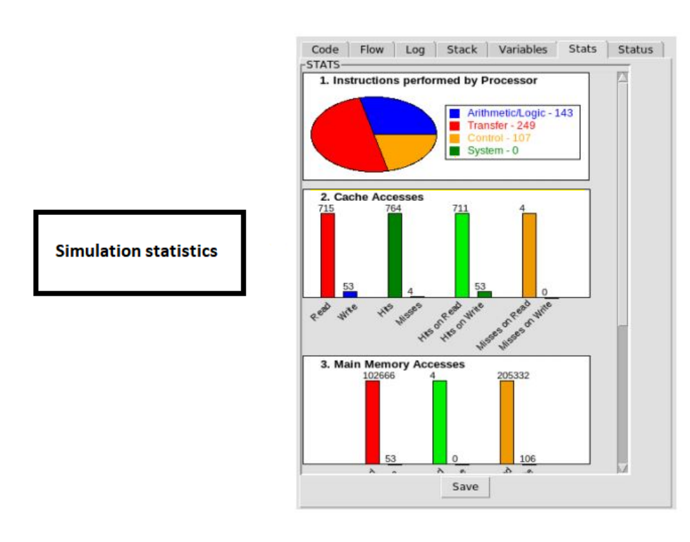
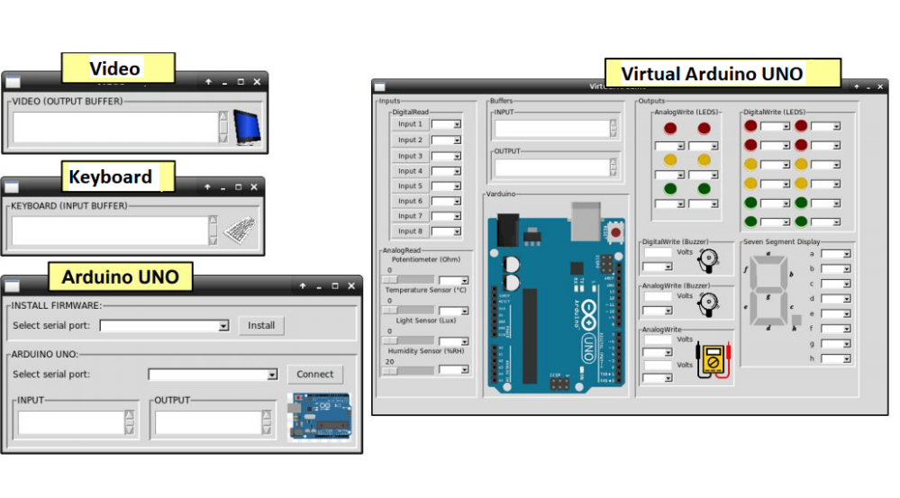
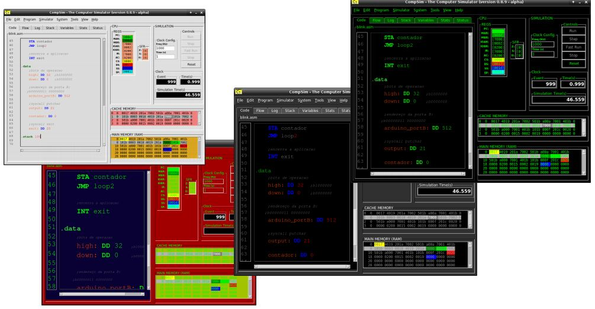

Graphical Interface
 CompSim has two types of platform configurations: default mode, where the system already has a default configuration, and "customize" mode, which allows the parameterization of component configurations (such as the number of lines in cache or ram memory). This simulator has its own code editor where you can create new applications, an aid for coding (with the code helper) and all the other functions already common in environments for editing codes, such as: the possibility of having- if comments in the code and resources for editing (cut, copy, paste, etc.). Besides, there is also an assembler where the lexical, syntactic and semantic analysis of the code are made.
CompSim has two types of platform configurations: default mode, where the system already has a default configuration, and "customize" mode, which allows the parameterization of component configurations (such as the number of lines in cache or ram memory). This simulator has its own code editor where you can create new applications, an aid for coding (with the code helper) and all the other functions already common in environments for editing codes, such as: the possibility of having- if comments in the code and resources for editing (cut, copy, paste, etc.). Besides, there is also an assembler where the lexical, syntactic and semantic analysis of the code are made.
Simulation Controls
In terms of simulation controls, there are 3 different possible modes:
- Run = conventional simulation (brings the simulation status to keep track of what is happening with the software or hardware);
- Fast run = fast simulation (only for running);
- Step-by-step = step-by-step simulation (thus having greater precision);
In the visualization aspect you can find the application execution flow, events that occur in the hardware and even graphics that are available after the simulation is done.
CompSim also offers support tools assisting in hardware insertion, data and code conversion. It also features a possible integration with peripherals, such as a virtual UNO Arduino, where you can use it without needing a "real" UNO Arduino.
You can also customize the simulator by changing colors and font size according to possible user demands.
